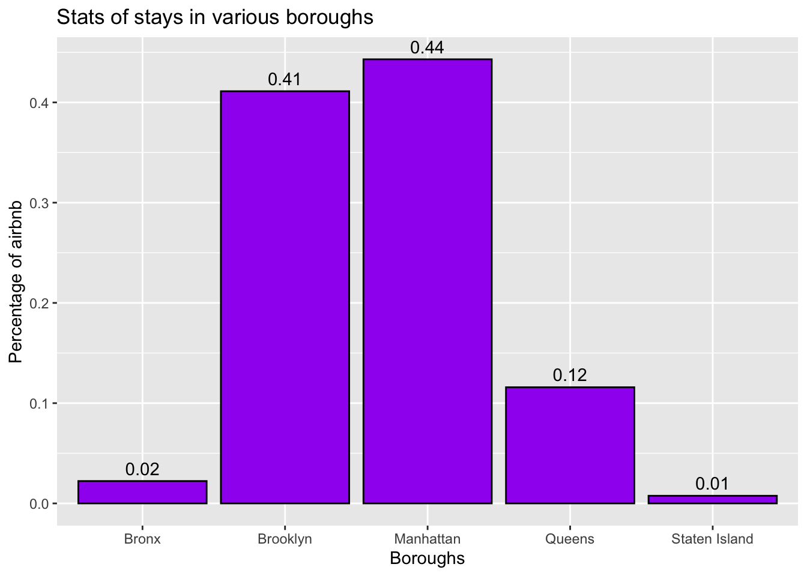
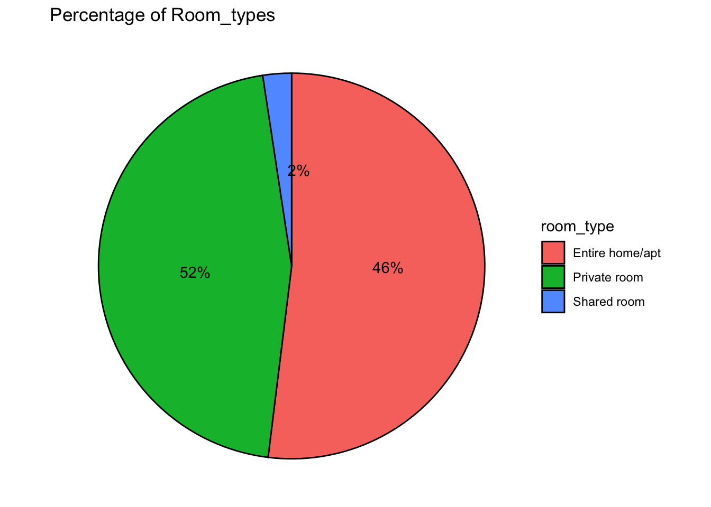
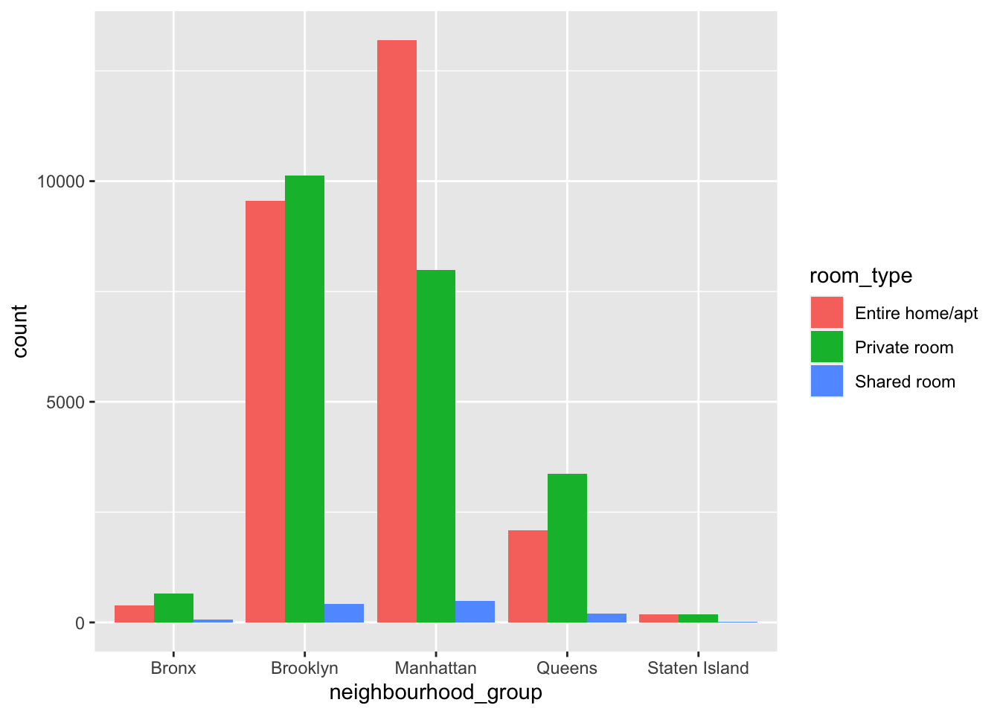
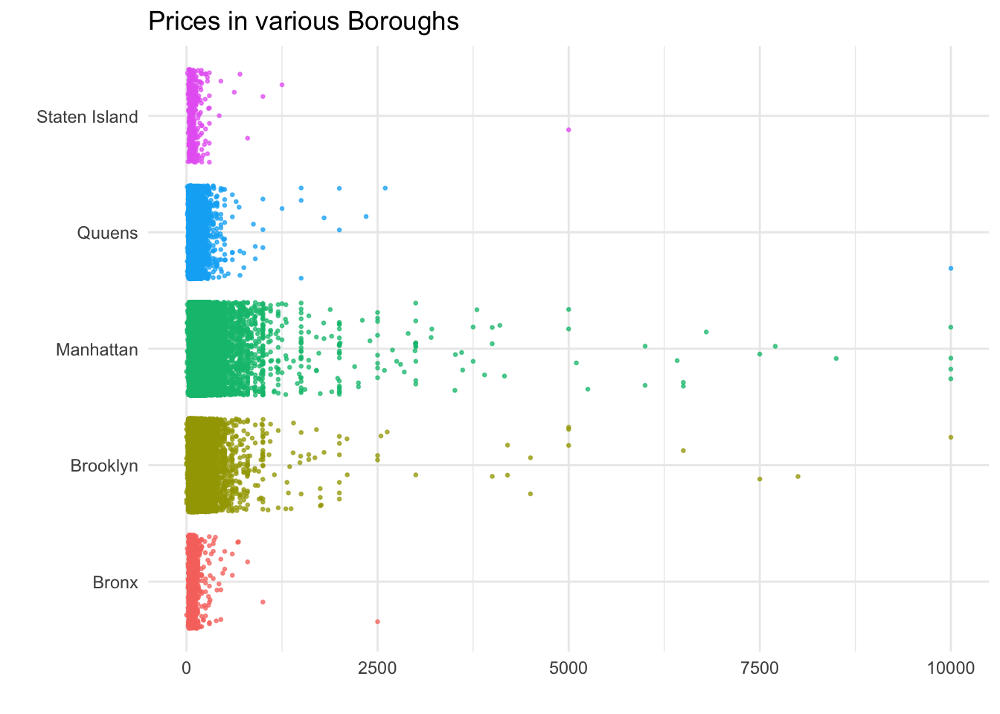

library(tidyverse)
library(ggplot2)
library(here)
library(dplyr)
library(scales)
knitr::opts_chunk$set(echo = TRUE, warning=FALSE, message=FALSE)Challenge 5
challenge_5
railroads
cereal
air_bnb
pathogen_cost
australian_marriage
public_schools
usa_hh
Introduction to Visualization
Challenge Overview
Today’s challenge is to:
- read in a data set, and describe the data set using both words and any supporting information (e.g., tables, etc)
- tidy data (as needed, including sanity checks)
- mutate variables as needed (including sanity checks)
- create at least two univariate visualizations
- try to make them “publication” ready
- Explain why you choose the specific graph type
- Create at least one bivariate visualization
- try to make them “publication” ready
- Explain why you choose the specific graph type
R Graph Gallery is a good starting point for thinking about what information is conveyed in standard graph types, and includes example R code.
(be sure to only include the category tags for the data you use!)
Read in data
Read in one (or more) of the following datasets, using the correct R package and command.
- cereal ⭐
- pathogen cost ⭐
- Australian Marriage ⭐⭐
- AB_NYC_2019.csv ⭐⭐⭐
- railroads ⭐⭐⭐
- Public School Characteristics ⭐⭐⭐⭐
- USA Households ⭐⭐⭐⭐⭐
airbnb<-here("posts","_data","AB_NYC_2019.csv") %>%
read_csv()
airbnb# A tibble: 48,895 × 16
id name host_id host_…¹ neigh…² neigh…³ latit…⁴ longi…⁵ room_…⁶ price
<dbl> <chr> <dbl> <chr> <chr> <chr> <dbl> <dbl> <chr> <dbl>
1 2539 Clean & … 2787 John Brookl… Kensin… 40.6 -74.0 Privat… 149
2 2595 Skylit M… 2845 Jennif… Manhat… Midtown 40.8 -74.0 Entire… 225
3 3647 THE VILL… 4632 Elisab… Manhat… Harlem 40.8 -73.9 Privat… 150
4 3831 Cozy Ent… 4869 LisaRo… Brookl… Clinto… 40.7 -74.0 Entire… 89
5 5022 Entire A… 7192 Laura Manhat… East H… 40.8 -73.9 Entire… 80
6 5099 Large Co… 7322 Chris Manhat… Murray… 40.7 -74.0 Entire… 200
7 5121 BlissArt… 7356 Garon Brookl… Bedfor… 40.7 -74.0 Privat… 60
8 5178 Large Fu… 8967 Shunic… Manhat… Hell's… 40.8 -74.0 Privat… 79
9 5203 Cozy Cle… 7490 MaryEl… Manhat… Upper … 40.8 -74.0 Privat… 79
10 5238 Cute & C… 7549 Ben Manhat… Chinat… 40.7 -74.0 Entire… 150
# … with 48,885 more rows, 6 more variables: minimum_nights <dbl>,
# number_of_reviews <dbl>, last_review <date>, reviews_per_month <dbl>,
# calculated_host_listings_count <dbl>, availability_365 <dbl>, and
# abbreviated variable names ¹host_name, ²neighbourhood_group,
# ³neighbourhood, ⁴latitude, ⁵longitude, ⁶room_typeairbnb %>%
select(neighbourhood_group) %>%
n_distinct(.)[1] 5airbnb %>%
select(neighbourhood) %>%
n_distinct(.)[1] 221Briefly describe the data
“AB_NYC_2019.csv” dataset consists of a list of airbnb’s in 5 boroughs in New York City. There are 48895 rows and 16 columns. Each column represents specific data about the airbnb like location, owner, rating, etc.
Tidy Data (as needed)
Is your data already tidy, or is there work to be done? Be sure to anticipate your end result to provide a sanity check, and document your work here.
Data is already tidy. No extra work needs to be done.
dim(airbnb)[1] 48895 16Are there any variables that require mutation to be usable in your analysis stream? For example, do you need to calculate new values in order to graph them? Can string values be represented numerically? Do you need to turn any variables into factors and reorder for ease of graphics and visualization?
Document your work here.
Getting the count of neighbourhood_group for using it in the bar graph. Mutated new variables from room_type statistics to know the percentage to be plotted on the pie chart and to know the labels and exactly where top place them.
#count for neighbourhood_group
CountBoroughs <- airbnb %>%
count(neighbourhood_group)
CountBoroughs# A tibble: 5 × 2
neighbourhood_group n
<chr> <int>
1 Bronx 1091
2 Brooklyn 20104
3 Manhattan 21661
4 Queens 5666
5 Staten Island 373#count for room_type
CountType <- airbnb %>%
count(room_type)
CountType <- CountType %>%
mutate(perc = round(n*100/sum(n),1), #new variable "perc" to know the percentage to be used in the pie chart
pie = cumsum(perc) - (0.5*perc), #"pie" to locate the location of the label
label = paste0(round(perc), "%")) %>% #"label" to get the label for each part of the pie chart
select(-n)
CountType# A tibble: 3 × 4
room_type perc pie label
<chr> <dbl> <dbl> <chr>
1 Entire home/apt 52 26 52%
2 Private room 45.7 74.8 46%
3 Shared room 2.4 98.9 2% Univariate Visualizations
#Classifying the neighbourhood_group column
ggplot(CountBoroughs, aes(x = neighbourhood_group, y = n/sum(n))) + #plot the x-axis and y-axis
geom_bar(fill = "purple",
color="black", stat = "identity") + #to get the bar graph
geom_text(aes(label = round(n/sum(n),2)), vjust = -0.5)+ # to get the labels for each bar plot
labs(x = "Boroughs",
y = "Percentage of airbnb",
title = "Stats of stays in various boroughs") #to get the labels of axis and title of the graph
Have used bar graph to know the compare the stays in different neighbourhoods. From the above bar graph, we can see that there are 5 boroughs. Around 0.44% of the total airbnb’s are located in Manhattan and least with 0.01% in Staten Island.
#Classifying the neighbourhood_group column
ggplot(CountType, aes(x = "", y = perc, fill = room_type)) + #to plot the room_type and perc
geom_bar(stat = "identity",
color="black") + #to fill the color of the edges and for self calculation
geom_text(aes(y = pie, label = label),
color = "black") + #to get the labels printed on the pie chart
coord_polar("y",
start = 0,
direction = -1)+ #to draw the pie chart
theme_void()+ #to remove extras
labs(title = "Percentage of Room_types") #for the title of the graph
Have used pie chart to see what percent of room types are used as whole in the dataset. From the above graph, we can infer that there are 3 types of stays available i.e Entire home/apt, Private room and Shared room. There are very less i.e 2% stays provide shared room. Entire home/apt is provided by many stays (52%).
Bivariate Visualization(s)
Any additional comments?
ggplot(airbnb,
aes(x = neighbourhood_group,
fill = room_type)) + #plotting a graph for neighbourhood_group and its count
geom_bar(position = position_dodge(preserve = "single"))
Have used bar graph to show what distribution of room_types are being offered in various neighbourhood_groups. From th above graph it can inferred that Entire home/apt are mostly located in Manhattan borough, whereas maximum private rooms are offered in Brooklyn.
ggplot(airbnb,
aes(y = factor(neighbourhood_group,
labels = c("Bronx",
"Brooklyn",
"Manhattan",
"Quuens",
"Staten Island")),
x = price,
color = neighbourhood_group)) + #setting the y axis, x axis, labels of y-axis and colors by axis
geom_jitter(alpha = 0.7,
size = 0.5) + #setting the size of the jitter
labs(title = "Prices in various Boroughs",
x = "",
y = "") + #setting the labels
theme_minimal() +
theme(legend.position = "none")
Jittered plot is used instead of point plot to clearly show the price distribution in various neighbourhood groups. From the above Jittered plot we can see that the prices range anywhere from 0 to 10000. The maximum variation has been seen in Manhattan region. Brooklyn’s price distribution is slightly similar to Manhattan. Staten Island and Bronx showed very less distribution compared to others.